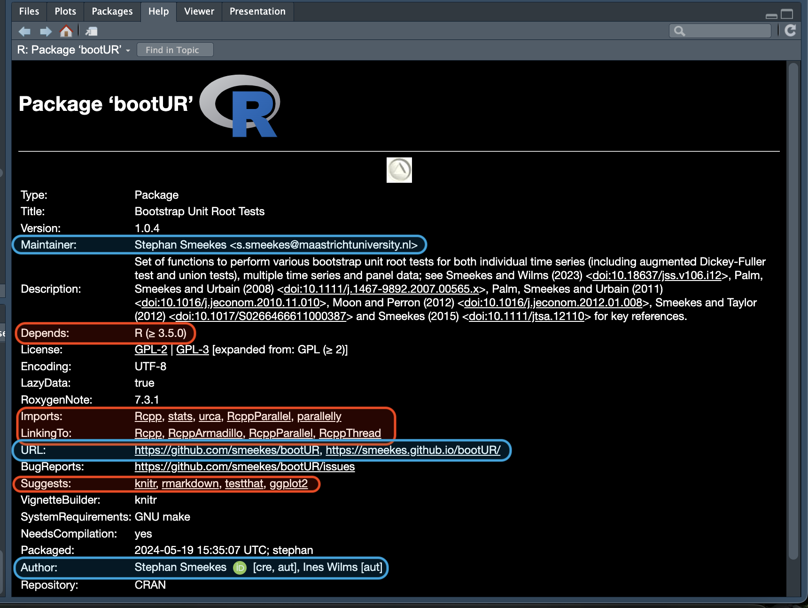

function_name(argument1 = value1, argument2 = value2, ...)Introduction to R
Session 3
Session Overview
Functions
Functions
We have already encountered many functions in R:
Add examples based on previous sessions
Function Overview
A function consists of three parts:
Arguments
- A function is called by specifying the function name followed by one or more comma-separated arguments in parentheses:
- This gives the same:
function_name(argument2 = value2, argument1 = value1, ...)- This also gives the same:
function_name(value1, value2, ...)- This does not!
function_name(value2, value1, ...)- Why?
More about Arguments
If you don’t give argument names, R assumes arguments are given in the order as defined.
There are also default arguments, which do not always need to be specified.
Let us look at an example: calculating the logarithm using the
logfunction:
fake_data <- c(1, 1, 2, 3, 5, 8, 13, 21)
1log_exp_data <- log(fake_data)
2log_2_data <- log(fake_data, base = 2)- 1
- Calculates the natural logarithm;
- 2
- Calculates the logarithm with base 2.
Understanding the log function
Execute the command ?log. It gives something like this:
Understanding the log function
Execute the command ?log. It gives something like this:
Understanding the log function
Execute the command ?log. It gives something like this:
Understanding the log function
Execute the command ?log. It gives something like this:
Understanding the log function
Execute the command ?log. It gives something like this:
Understanding the log function
Execute the command ?log. It gives something like this:

Understanding the log function
Execute the command ?log. It gives something like this:
Understanding the log function
Execute the command ?log. It gives something like this:
input and output of the log function
- Note how the
logfunction preserves the object type of the input:
[1] 0.0000000 0.0000000 0.6931472 1.0986123 1.6094379 2.0794415 2.5649494
[8] 3.0445224 [,1] [,2]
[1,] 0.0000000 1.609438
[2,] 0.0000000 2.079442
[3,] 0.6931472 2.564949
[4,] 1.0986123 3.044522Exercise: Function Arguments
The function rnorm() can be used to simulate normally distributed data. The function mean() can be used to calculate the sample mean of the data, while the function sd() can be used to calculate the sample standard deviation. You will need to use the help files of these functions to complete the question.
Simulate 100 numbers from a normal distribution with mean 0 and standard deviation 1 and store these in a vector called
x1. Do this with the least amount of explicitly specified arguments as possible.Simulate 200 numbers from a normal distribution with mean 0 and standard deviation 5 and store these in a vector called
x2. Do this with the least amount of explicitly specified arguments as possible.Simulate 80 numbers from a normal distribution with mean -6 and standard deviation 4 and store these in a vector called
x3. Do this with the least amount of explicitly specified arguments as possible.Calculate the mean and standard deviation of each of the three series.
Set the 10th value of
x1toNA. Calculate the mean and standard deviation again. What do you observe? Learn from the help function how we can fix this.
The … argument
- If you opened the help function of
mean()before, you saw the last argument is
“... further arguments passed to or from other methods”
...is a special argument: it allows you to put in different arguments that are then passed on to an other function internally.To know how to put them correctly, you may need to look at the other function; not always easy!
Since the function accepts any arguments in
..., an error message will typically be given at a ‘deeper level’, which can be very confusing. Or you even may not get an error message at all.
Exercise: function arguments revisited
Repeat the last part of the previous exercise, calculating the standard deviation for
x1. Make sure to name the second argument of the function explicitly. Now intentionally misspell the name of the second argument and look at the error message.Now, do the same for calculating the mean; first do it correctly, then make an intentional mistake in the name of the argument.
Can you explain the difference in results?
Exercise: plot president approval ratings
The dataset presidents contains US president approval ratings on a quarterly basis from 1945 to 1974. To visualise these approval ratings, we can use the plot() function. First, make a basic plot, then customise the plot in the following ways:
The title of the X-axis should say ‘Year’, the title of the Y-axis ‘Approval Rating’.
Make the line blue. (Hint: specifying the colour literally as
"blue"works, also note the cool effects in RStudio!)Make the tick marks appear on the inside of the figure rather than the outside. Even better, change the tick marks into grid lines. (This one is tricky!)
You will need to consult the help file for this exercise; see this therefrom more as an exercise in how to navigate R’s help system, than an exercise in plotting (which we will cover in more detail later).
You may want to ask ChatGPT for help and then try to see if you could also have gotten the same answer yourself; it may not always give you the most straightforward answer though!
Useful functions: summary / descriptive statistics
often you want to have a quick look at your data. Here are some useful functions for this purpose:
For (numerical) vectors:
| Function | Description |
|---|---|
length(v) |
Number of elements in \(v\) |
max(v) |
Largest value in \(v\) |
min(v) |
Smallest value in \(v\) |
sum(v) |
Sum of the elements of \(v\) |
prod(v) |
Product of the elements of \(v\) |
mean(v) |
mean of the elements of \(v\)! |
sd(v) |
Standard deviation of the elements of \(v\) |
Useful functions: summary / descriptive statistics
Often you want to have a quick look at your data. Here are some useful functions for this purpose:
For matrices and data frames:
| Function | Description |
|---|---|
nrow(D) |
Number of rows in \(D\) |
ncol(D) |
Number of columns in \(D\) |
head(D) |
Displays the first few rows of \(D\) |
tail(D) |
Displays the last few rows of \(D\) |
summary(D) |
Gives a summary of \(D\) |
- For numerical matrices and data frames:
| Function | Description |
|---|---|
colSums(D) |
Sum of the elements in each column of \(D\) |
rowSums(D) |
Sum of the elements in each row of \(D\) |
colMeans(D) |
Mean of the elements in each column of \(D\) |
rowMeans(D) |
Mean of the elements in each row of \(D\) |
Bonus: Looking Inside Functions
Structure of functions
- Functions in R have the following structure:
A simple example function
- This function converts miles to kilometres:
miles_to_km <- function(miles = 1){
km <- 1.609344 * miles
return(km)
}- How many kilometres is 60 miles?
miles_to_km(60)[1] 96.56064- The default value of miles is set to one, so executing the function without argument, gives you how many kilometres is equal to 1 mile:
miles_to_km()[1] 1.609344Multiple function outputs
R can only give one object as output.
if you have multiple outputs, you have to combine them in one object.
Often, the most natural choice for that is to use a list, as this can combine outputs of different nature.
An example function with multiple outputs
- This function converts miles to kilometres and to metres:
- How many (kilo)metres is 60 miles?
miles_to_metric(60)$km
[1] 96.56064
$m
[1] 96560.64Why create your own functions?
You can perfectly get around R without ever creating your own functions.
-
But there are good reasons to do so:
Easy if you need the same code repetitively;
Decreases the probability of making mistakes, as you only need to write that piece of code once;
You can use your functions in different script later on.
Creating functions is a basic skill well worth investing in.
Note: make sure to first execute the lines containing your function before you use it (and execute again after an update to the code).
Exercise: create your own function
- Create a function that takes as input the
coursesdata frame. The function output should be the total number of courses that use student tutors.
- There are many ways to count the number of courses that require student tutors. Probably the easiest is to directly do calculations with the logical values:
TRUEis treated as 1,FALSEas 0:
c(TRUE + FALSE, TRUE + TRUE, TRUE * FALSE)[1] 1 2 0- We now want to extend the function to give a second output. This output should contain a data frame with two columns: the first is the course code, the second is the number of tutorials for each course.
- The number of tutorials should be calculated as the number of students divided by the number of students per tutorial group, and then rounded up.
- The number of students per tutorial group should be a second argument of the function, with a default value of 15.
- To round up, we can use the function
ceiling().
Objects revisited
Objects and Their Labels
Discussion how objects and classes are used for function output. How then functions appear to act differently on different types of objects (e.g. plot()).
- Objects can be seen as a package: there is the actual content, and there is a label explaining the purpose of the object.
- We can obtain the label from the function
class() - Many functions act differently, depending on the class of the input.
The summary function
We can illustrate this using the
summary()function.Summary on vectors:
The summary function
- Summary on data frames:
Course Coordinator Code
Length:30 Length:30 Length:30
Class :character Class :character Class :character
Mode :character Mode :character Mode :character
Programme Period Enrollments StudentTutors
Econometrics :10 1:5 Min. : 57.00 Mode :logical
Economics :10 2:6 1st Qu.: 65.75 FALSE:19
International Business:10 3:4 Median :290.00 TRUE :11
4:6 Mean :292.17
5:5 3rd Qu.:412.50
6:4 Max. :610.00 The summary function
The output of summary is an object in itself:
In terms of content, this is just a (named) vector.
Behind the Scenes: the function.class structure
- Behind the scenes, R works as follows:
Behind the Scenes: the function.class structure
If you start typing the
summary()function name in RStudio, you will see that there are actually many summary functions …… among which
summary.data.frame()andsummary.matrix()In principle, we need not bother with the system, but it can be useful to keep in mind for two cases:
Help files and documentation may differ depending on classes.
Applying it to an object for which the class function has not been defined (“Why does
summary()not work on my object X?”).
Exercise 3.X: Using the plot function for different objects
Remember your vector
x1of normally distributed random variables created in Exercise 3.xMake a basic plot of this vector using the simple command
plot(x1).Now transform your vector
x1into a time series object using the functionts(). Save it asx1ts.Make a plot of this new object using the command
plot(x1ts). Why does it look different from before?Make a plot of the variable
Periodfrom thecoursesdata frame. Explain why this looks yet again different.
Packages
Installing Packages
One of R’s defining features is the richness of its package management system.
Installing packages is straightforward. But how do I know which package I need?
And how do packages function? Do they rely on other packages? Should I be bothered with this?
Let’s have a deeper look.
Finding good packages
Sometimes packages come recommended in books or articles.
If not, do a Google or ChatGPT search: ‘R package for reading Excel’; top search results are typically the most popular packages.
-
Unsure about the quality? Some advice:
Consider the authors. Are they respected academics? Or have a good track record of developing packages? These are good signs.
Read the manuals / help files. Do they make sense? Are they written by someone who understands the important aspects of the methods?
Install and try them, and see if they match your expectations.
More about packages
Most of the time you need not need to be bothered by understanding the deeper meanings of the package, and you can just install it directly. But in case you do want to have a look, here are some things you can pay attention to.
‘Official’ packages are hosted on the Comprehensive R Archive Network (CRAN).
The package homepage can be found as https://cran.r-project.org/package=package-name
You can find the same info after installing a package by clicking on the package name, then on ‘DESCRIPTION file’.
-
Important fields:
- Maintainer & Author: especially helpful for specialised packages, for which you expect the authors to be experts in the field.
- URL: Is there dedicated documentation? What is the quality of the documentation (often correlates with the quality of the package)?
- Imports, Depends & LinkingTo: the packages needed to make the package work (installation is normally taken care of automatically).
- Suggests: packages that are not necessarily needed for using the package, but are needed for specific functionalities.
Checking out the bootUR package
Checking out the bootUR package
Checking out the bootUR package
Suggested packages
It is up to the author to decide what packages to suggest, and what packages to list as imports.
It is also up to the author to protect the user from strange error messages while not having installed a suggested package.
This is not always done properly!
Suggested packages are not always installed automatically!
Installing suggested packages
- The command
install.packages("package-name")does not install suggested packages. Use instead
install.packages("package-name", dependencies = TRUE)- In RStudio, make sure that the box “Install dependencies” is checked.
Exercise: package information & installation
Find out who the maintainer is of the package
bigtime.Check if you have the suggested packages for
bootURinstalled. If you haveggplot2installed, remove it from your installation. (This can be done by clicking at the right spot in RStudio.)Install the package
bootURin the naive way usinginstall.packages("bootUR").This package has a function to plot missing values in a time series dataset; apply this function to the data set that comes with the package. (This obviously implies you need to find both the function and the dataset.)
You will get an error message. Fix the error and repeat the steps above to produce a plot of the missing values.
Installing packages from (other) source(s)
Sometimes you might find a package not available on CRAN, but hosted on different platforms, such as GitHub.
Such packages have to be installed from ‘source’.
Occasionally, CRAN may also ask you if you want to install a package from source, if a newer version is available than the standard binary package.
Installing from source is problematic on Windows and Mac, as it requires the installation of additional software for packages that are built on C/C++/Fortran code that needs compilation (see e.g.
?install.packagesfor details).Advice for beginners: do not install from source!
Bonus exercise: installing packages from source
Important
This exercise should only be completed if you feel up for a challenge and want to get your system ready for installing from source.
Go to https://github.com/Marga8/HDGCvar and follow the installation instructions to install the package
HDGCvarfrom source. This should work on all systems.Go to https://github.com/RobertAdamek/desla and follow the installation instructions to install the package
deslafrom source.
Caution
This will most likely not work and result in errors.
- Go to https://github.com/smeekes/bootUR and read the extended installation instructions for installing from source. Install the missing software and then try to install the package
deslaagain.
Warning
On Windows, this should be relatively safe, but on Mac things still can go wrong. Be warned.